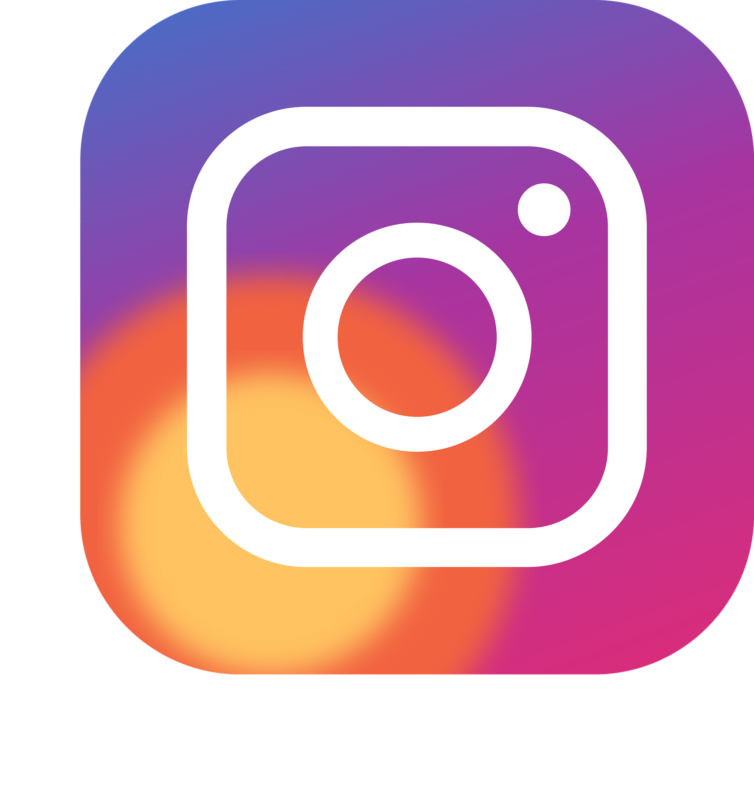

Jugador de baloncesto profesional altamente talentoso, conocido por su
habilidad excepcional con el balón,
su manejo y su capacidad para anotar desde cualquier posición en la
cancha. Amplia experiencia en la NBA,
habiendo jugado para equipos exitosos como los Cleveland Cavaliers, los
Boston Celtics y los Brooklyn Nets.
Reconocido como uno de los mejores bases de la liga.
Cleveland Cavaliers (2011-2017) Seleccionado como la primera elección
global en el Draft de la NBA de 2011.
Formó una exitosa dupla con LeBron James, ayudando al equipo a llegar a
las Finales de la NBA en 2015 y 2016.
Ganador del campeonato de la NBA en 2016 en una histórica remontada contra
los Golden State Warriors. Boston Celtics (2017-2019)
Intercambiado a los Boston Celtics en 2017. Lideró al equipo a múltiples
apariciones en playoffs. Demostró ser un jugador emocionante y habilidoso,
destacando como anotador y creador de juego. Brooklyn Nets (2019-presente)
Se unió a los Brooklyn Nets en 2019,
formando una poderosa asociación con Kevin Durant. A pesar de enfrentar
lesiones, ha demostrado su valía como anotador y líder en el equipo.
Documento portafolio
